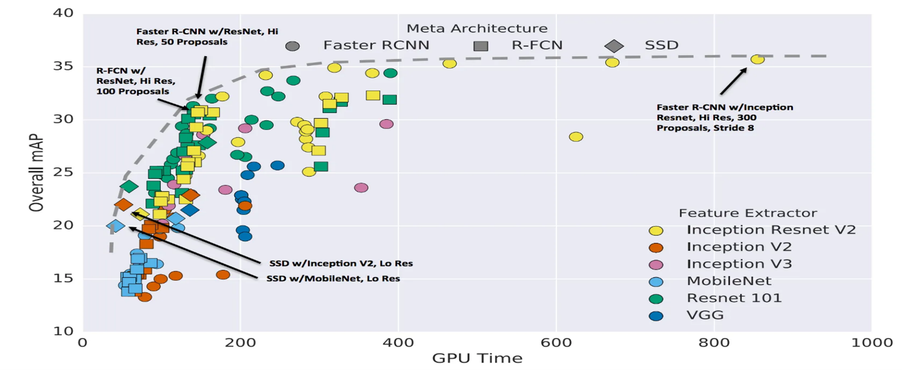
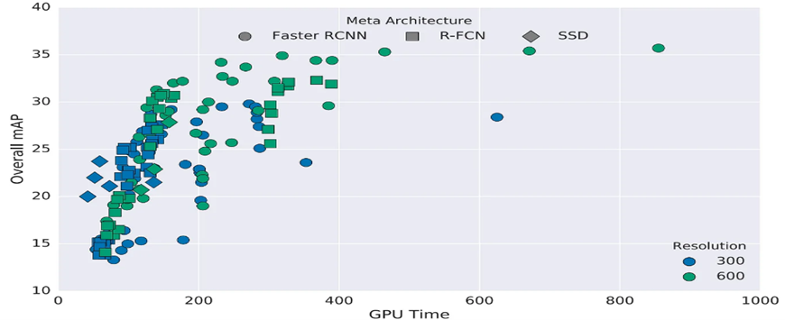
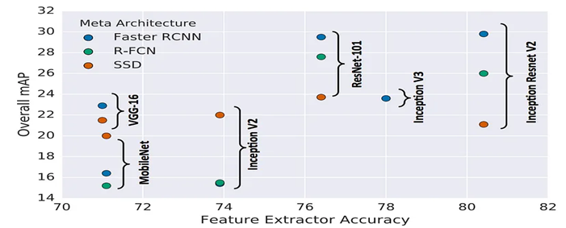
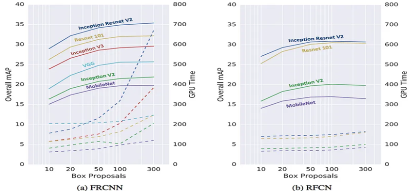

RecoMatrix

AI Enigma Contest task on real time complex object detection using computer vision and machine learning in python
Algorithms planned to be implemented
Click to expand
- [x] Faster R-CNN - [x] R-FCN - [x] SSDProject Structure
COCOFasterR-CNN
complexObjectDetection
|--- output
|--- scripts
|--- src
| |--- coco.names
| |--- detector.py
| |--- main.py
|--- test
|--- env.yml
Directory Details
- output: This directory is for keeping the detected new images. Used by the
createBoundingBoxmethod indetector.pyfile - trained_model: After testing against Faster and Mask R-CNN, finally,Faster R-CNN which is generated by the downloader from TF Object Detection Model Zoo
- scripts: A directory created & defined by the developers to keep useful scripts for making the developement of this project as seamless as possible
- src: Holds the
pythoncodes - test: It is used to store the existing and real time complex
imageandvideoswhich are used by themain.pyfile for training the model.
Environment Setup
The project environment is managed by conda . Details are given below:
- OS Platform:
Linux 6.5.5-arch1-1 - Python Version:
Python 3.9.0 - PIP Version:
pip 23.2.1 - Conda Version:
conda 23.7.4 - Tensorflow Version:
tensorflow-gpu 2.6.0 - Cuda Toolkit Version:
cudatoolkit 11.2.2 - CUDNN Version:
8.1
The above mentioned python packages version matching is an important part. It must be noticed that if the libraries versions are matching or not. There are two ways to make the developement environment ready:
Automatic - Using the YML file
I have created an env.yml file using conda so that it becomes easier to install the developement libraries in one command. Use this command to install all the required libraries with specific versions.
Note that
condamust be installed first
conda env create -f env.yml
Manual
Every packages can be installed manually. The advantage of installing manually is that we get more control and it gets easier to solve errors and also find errors.
- Create the virtual environment first
conda env create --name tf_gpu python 3.9
conda activate tf_gpu
- Install the libraries
conda install cudatoolkit=11.2 cudnn=8.1 -c=conda-forge
pip install tensorflow-gpu==2.6
pip install opencv-python
Running the project
We have made running the project much easier
- Activate the conda virtual environment first
conda activate tf_gpu
- Go to the
srcdirectory
cd src
- Run the
mainfile
python main.py
Command Line Arguments
We have added some CLA to out project so that we don't need to change in code when we want to run in different modes of our project. For example, currently we have a --camera argument which will activate the live detection using the webcam
python main.py --camera
Currently supported CLA are:
--help Print the built in help menu for this program
--camera Enable the live detection using camera
Performance Analysis
Meta Architecture (Accuracy and Speed)

Meta Architecture (Object Resolution)

Meta Architecture (Feature Extractor)

Architecture (Proposals Count)

References
Authors